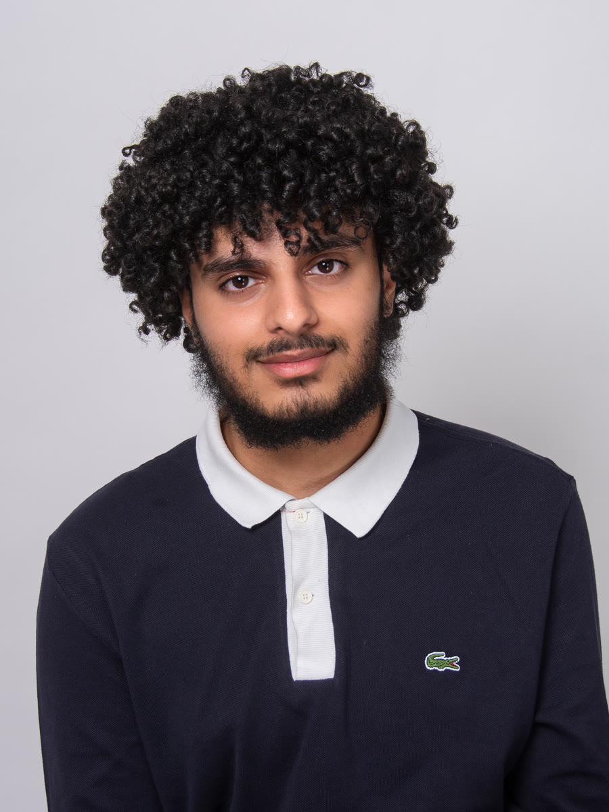
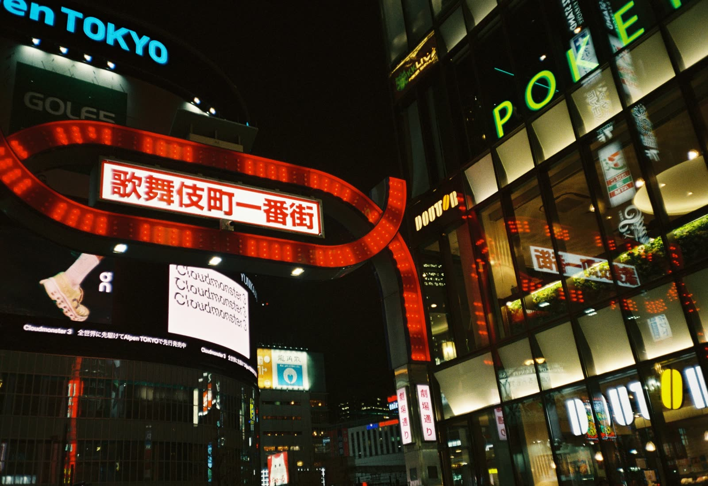
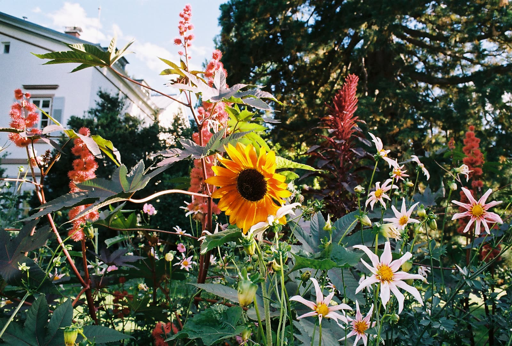
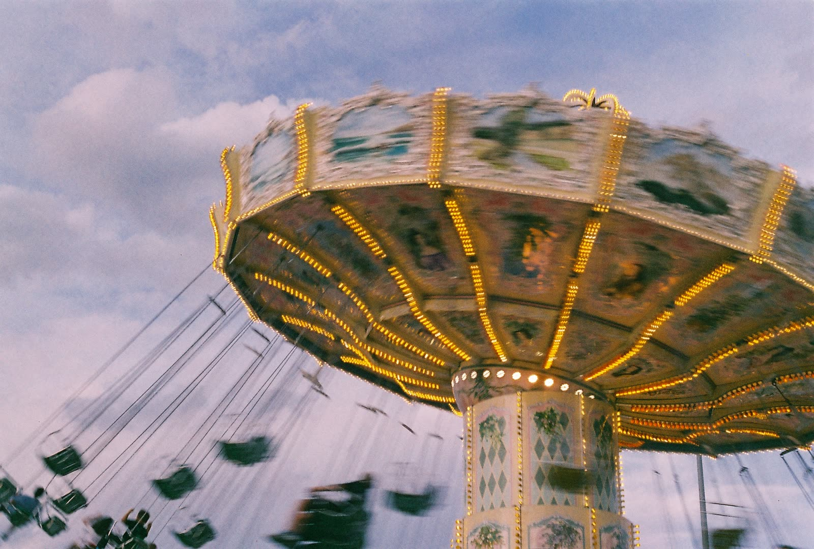
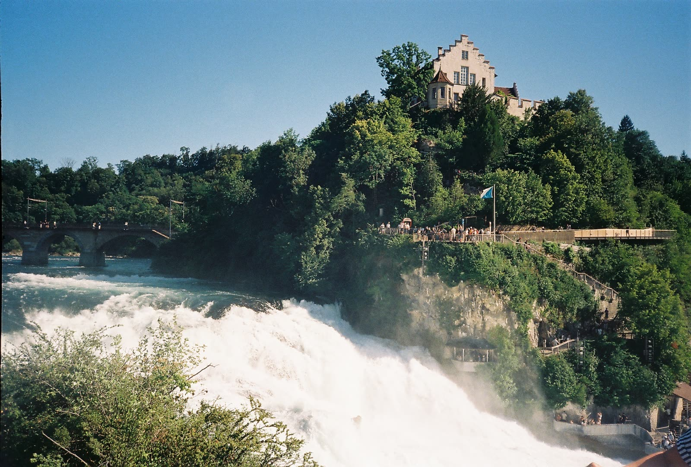
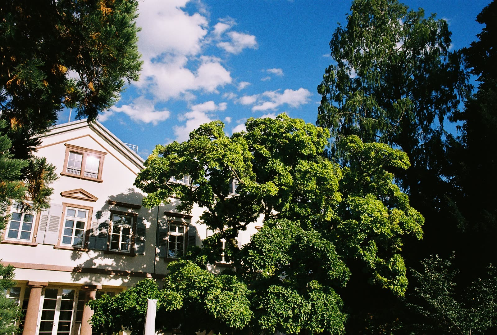

Werkstudent · Smart City Mannheim GmbH
- Datenanalysen von Klimaanalysesystemen und Verkehrskameras
- CAD-Konstruktionen
- Austausch von Sensoren und Batterien vor Ort
Maschinenbau · Konstruktion · Fotografie
Ich studiere Maschinenbau an der TH Mannheim und arbeite als Werkstudent bei Smart City Mannheim. Ich konstruiere in CAD, drucke meine Entwürfe und fotografiere analog.

Ich studiere Maschinenbau (Bachelor of Science) an der Technischen Hochschule Mannheim. Praktische Erfahrung habe ich bei Bosch Rexroth im Entwicklungsbereich und bei Akkodis gesammelt, aktuell arbeite ich als Werkstudent bei Smart City Mannheim.
Mich begeistert die Verbindung aus Konstruktion, Daten und Hardware: vom CAD-Modell über den 3D-Druck bis zum Sensor, der draußen im Einsatz ist.
Ein Handyhalter mit MagSafe-Aufnahme, den ich komplett in Fusion 360 konstruiert habe. Die Baugruppe besteht aus Befestigung, Platte, Knopf und Schraube. Im Video siehst du erst das CAD-Modell und dann den fertigen Halter im Einsatz.
Als Werkstudent werte ich Daten aus Klimaanalysesystemen und Verkehrskameras aus, konstruiere in CAD und tausche Sensoren und Batterien vor Ort.
Eigenbau-MP3-Player auf Raspberry-Pi-Basis mit USB-C-Laden, USB-C-Kopfhörern und Bluetooth.
Neben dem Studium fotografiere ich analog auf 35mm, mit der Canon A1 und der Canon AS-1, meist auf Kodak Gold 200 und Ultramax 400, manchmal auch auf abgelaufenem Film.





Du möchtest dich vernetzen oder hast eine Frage? Schreib mir gern über LinkedIn.